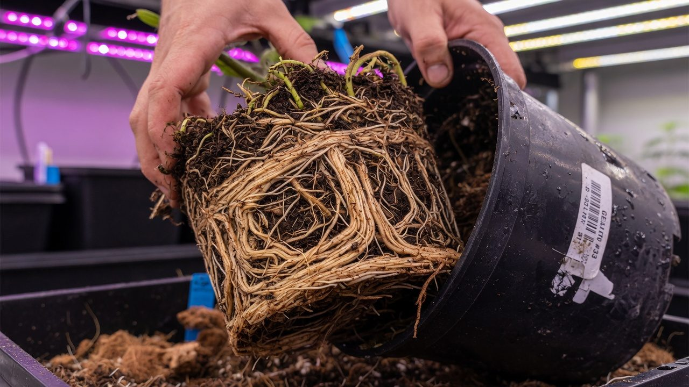
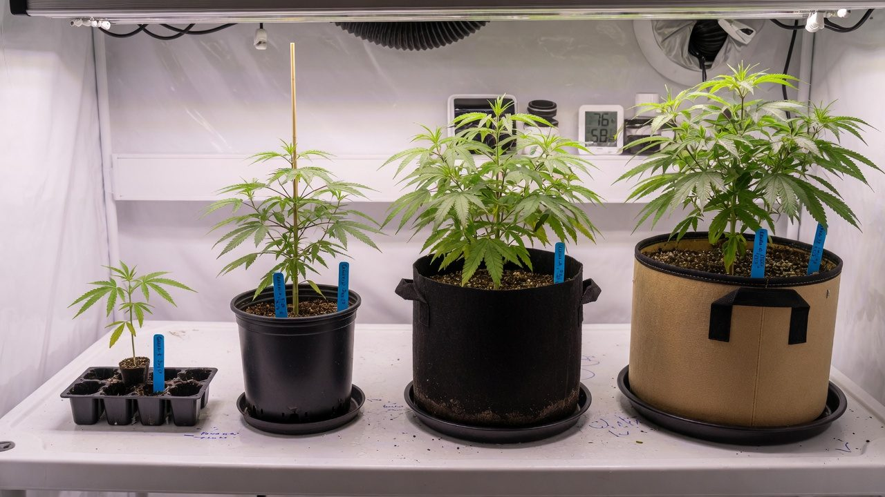
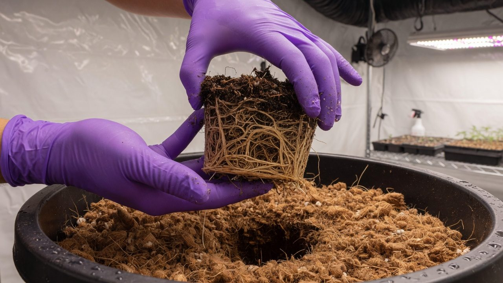
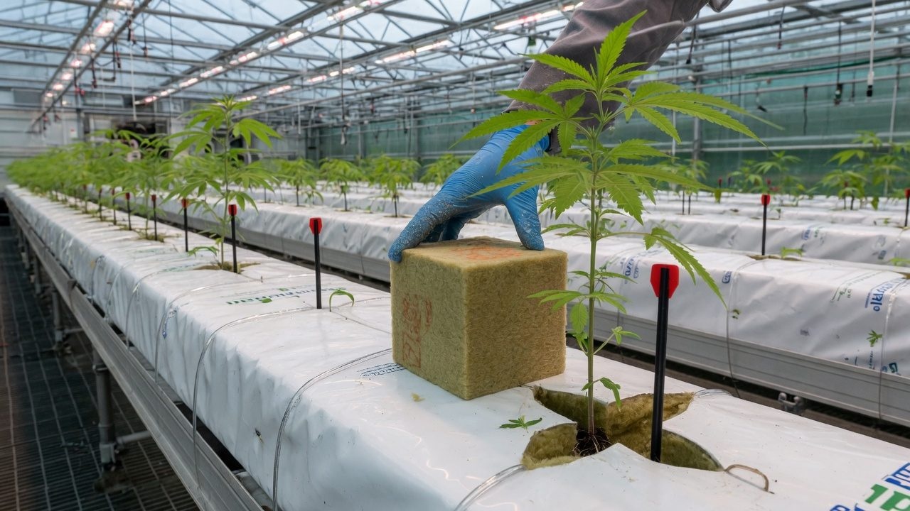

Transplanting: how to put a plant in a larger pot without transplant shock
This paper shows you how to move a plant to a larger container and prevent transplant shock. Each transplant causes damage that you control. If you do the transplant at the correct time into a prepared container, the plant shows no effect. If you do the transplant after the correct time, or if your procedure is not careful, the growth of the plant stops for a week. The paper gives the correct time to move the plant, the container to use, and the procedure. The paper also gives the methods for a transplant from one medium to a different medium, the first irrigation, and the signs of transplant shock.
Purpose and scope
Transplanting (or up-potting) is the task in which you move a plant into a larger container, or into a different growing medium. Move the plant before the container or the medium starts to decrease the growth of the plant. A cannabis plant stays in containers for the full time that it is in a grow room. Thus you move most plants two or three times between the cutting and the harvest.
Each transplant causes small damage to the roots. You cause the damage because the plant can then make a root system that is larger than the previous container can hold.
If you do a transplant at the correct time into a prepared container, the transplant has almost no effect on the plant. The plant continues its growth as before. If you do the transplant after the correct time, or if your procedure is not careful, the growth of the plant stops for some days. The growth also stops if you do not prepare the container correctly. The name of this condition is transplant shock. In a room where each task has a specified date, you cannot get these days again.
This paper is for a grower who does a transplant for the first time. The paper gives a definition of each term where the term first occurs. After you read the paper, you will know the correct time to move a plant. You will know the size of the new container and the procedure for the transplant. You will also know the effect of the first irrigation, the signs of transplant shock, and the methods to prevent it.
This paper is for each person who moves a cutting that has roots, or a seedling, to a larger container. These persons are home growers who move plants to larger pots and operators who use a plug → block → slab system. The paper starts at the point where the papers on cloning and on seeds and germination stop. At this point the plant has roots, and you can move the plant to a larger container.
Definitions
Transplanting has a small number of terms that are important. Make sure that you know these eight terms. The other sections of this paper use the terms many times.
Evidence and limitations
We want each paper to be correct. Thus we examine each paper for information that is not solid. This information comes from the view of one grower, from a small number of sources, or from grower methods that have no controlled test. We identify this information, and we do not show it as solid.
Frequently there is no paper for the decision that you must make. Then we use the reports of other growers and the methods that work in the rooms that we know. This information can help you, but it is not the result of a laboratory test. Use the methods that work for your plants, for your room and for your meters. If a table does not agree with your crop, use the data from your crop and record the difference.
- The primary definitions and the units of measurement in the paper
- Safety limits that have a citation to a regulation or a specification
- Target ranges for light, climate and feed in each stage. They are start values that you can change.
- SOPs that work in many rooms, but you must adjust them for your genetics and meters
- A number for yield or potency that you will always get, with no test at many sites
- Controller setpoints from a different facility, with no new calibration
If you find an error, make a report. We will correct it. Make the report on GitHub, with the name of the paper and the information that is incorrect. If you have a source, include it: Make a report of an accuracy problem. The regulations, labels and licenses of your area always override each procedure in these papers. The label weak in a paper shows the points where the risk of an error is highest.
Limits on root volume
A container is a limit on the size of the plant. A meta-analysis of 65 tests of pot size gives the average result. When the volume of the container became two times larger, the biomass of the plant increased by 43%[1].
The cause of this effect is important. Plants in small pots did not decrease their growth only because they had no more water or feed. The plants also decreased photosynthesis for each unit of leaf area. The plant senses the limit on its roots and decreases its photosynthesis before you see a symptom[1].
Tests for many years in horticulture show the same effect. Transplants from larger cells have thicker and shorter stems and start their growth more quickly after the transplant. They frequently give a crop after a shorter time. If the limit on the roots is very strong, the plant does not always make this growth again after the transplant[2][3]. The size of the container has a large effect on production.
The same meta-analysis shows a possible limit. A plant is no longer ‘unrestricted’ when the dry biomass is more than approximately 1 gram for each liter of pot[1]. It is not necessary to weigh the plant. The limit occurs before the pot looks full, and a long time before roots show at the drain holes. If the plant looks too large for the pot, the pot is a limit on the plant at this time.
Root function in containers
Roots become longer in the direction out and down until they touch an object. In a pot with smooth walls, the object is the plastic wall. The tip of the root changes direction to the side and goes along the wall around the pot. A tip that goes around the wall becomes longer and makes no branches. As a result, the root ball has a thick root mat at the wall and only a small number of roots in the middle. This structure is the opposite of the structure that you want.
Tests of different types of container for two seasons show this effect. Pots with smooth sides made the worst root structure. Air-pruning containers (with open walls or walls with holes) decreased the percentage of roots with an incorrect shape and of circling roots by a large quantity[4]. When the tip of a root touches dry air and not plastic, the tip becomes dry and stops. The plant then makes small branch roots behind the tip. The volume is the same, but the root ball is much better.
The other important effect in the plant is the wound response. When you cut a root or cause damage to a root, the plant does more than decrease its root mass. The wound causes the quantity of auxin (a growth hormone) to increase in the local area. The auxin makes the gradients again. These gradients tell the tissue near the wound to make new root primordia (the first cells of new roots)[5].
Thus a root ball that you loosen carefully, or cut lightly, starts its growth again and makes branches. A root mat of circling roots that you do not touch frequently stays as a root mat in the new medium[6]. A clean wound starts the signal for new roots. A coil that you do not cut stays as a coil.
In trees, circling roots girdle the trunk after a long time. A cannabis crop is much shorter, and the problem is different. The root mat keeps the shape of the pot for some weeks in the new container. The water of the irrigation goes around the root mat and not through it. As a result, the plant uses only a small part of the volume of the new container. The signs are a plant that wilts quickly and is in a wet medium.

Indicators for the time of a transplant
The date is the signal with the lowest accuracy. Genetics, pot size, temperature, and light change the speed at which the roots fill a container. Thus examine the pot and not the date. The list below gives the signals in an approximate sequence, with the most accurate signal first:
- Speed at which the plant uses water. First, the interval between irrigations is two or three days. When the roots fill the pot, the pot becomes dry in one day. The quantity of water that the plant uses increases almost in the same ratio as the root mass. This signal occurs first, and it is accurate. You do not have to touch the plant to see this signal.
- The root ball test. Tilt the pot and hold the stem between two fingers. Move the root ball out of the pot carefully. At the correct time, the root ball moves out in one piece, keeps its shape, and has white tips at the edges. Before the correct time, the medium does not hold together. After the correct time, the root ball has a brown root mat of circling roots[6].
- Roots at the drain holes. If you see a small number of white tips at the holes, the tips are a signal to move the plant at this time. If the roots make a root mat at the holes, you are after the correct time for the transplant.
- Canopy that is too large for the pot. Grower method: the ratio is incorrect when the height of the plant is two to three times the height of the pot. The ratio is also incorrect when the canopy is much wider than the pot. In these conditions the limit from Section 3 is near.
- Wilt between irrigations, with a moist medium. This symptom occurs in the last stage of a root-bound condition. The root ball cannot keep water for the plant, also when the pot contains some water[6].
| Signal | Before the correct time | At the correct time | After the correct time |
|---|---|---|---|
| Root ball test | The medium does not hold together | The root ball keeps its shape and has white tips at the edges | A brown root mat of circling roots and a coil |
| Drain holes | You see no roots | You see the first white tips | The roots make a root mat at the holes |
| Speed at which the plant uses water | 3 days or more between irrigations | An irrigation each day | Two irrigations each day, or the plant wilts after irrigation |
| Growth of the shoots | The size of the plant agrees with the pot | Approximately 2–3× the height of the pot | Growth stops. The leaves have less color. The plant has a nutrient deficiency. |
The effect of a transplant after the correct time is clear in the data on autoflower cannabis. These data are the best data on this effect, because the growth of an autoflower plant follows a time sequence that does not change. The plant does not wait for you.
A test for a hemp program in New York used a greenhouse. The growers moved seedlings from plugs of 40 mL (1.4 fl oz) into pots of approximately 11 L (3 gal) at day 8 or day 15. The seedlings had the same growth as plants that started from seed in the last pot. The growers kept other seedlings in the plug until day 22. In two of three cultivars, these plants had a height at the end of approximately half the height of the other plants. They also had a smaller number of branches[7].
If you move the plant a short time before the correct time, the plant does not use a small quantity of the new medium. Also, the root ball breaks into pieces more easily. If you move the plant after the correct time, the plant has less photosynthesis. It also has a root mat of circling roots and a slower start of growth.
If you are not sure, move the plant. The time for the transplant starts when the root ball holds together. After circling roots start, this time does not start again.

Sequence of container sizes
In a grow room, cannabis typically uses a sequence of two to four containers. Each step is approximately 2–4× the volume of the previous container. The ratio is more important than the volume in liters. The new container must have sufficient volume for some weeks of growth. The volume must not be too large, because the roots must fill the new volume quickly. The pot must also become wet and dry in a cycle that you can control.
| Stage | Container | Typical volume | Time in the container | Move when |
|---|---|---|---|---|
| Propagation | Plug / cube | 25–100 mL (0.85–3.4 fl oz) | 10–14 d | You see roots on more than one side of the plug |
| First stage of vegetative growth | First pot | 0.5–1 L (0.13–0.26 gal) | Approximately 1–2 weeks | The root ball moves out in one piece and has white tips |
| Vegetative growth | Middle pot | 4–7 L (1.1–1.8 gal) | Approximately 1–2 weeks | The pot is dry each day. You see tips at the edges. |
| Last stage of vegetative growth → flowering | Last pot | 11–19 L (2.9–5.0 gal) in a grow room | Rooting-in, then the change to the flowering stage | No other transplant |
Water and oxygen are the causes for transplanting in steps and not in one step to the last pot. A small root ball in a very large container can use only a small part of the volume. As a result, the medium around the root ball stays wet for days. The roots must have cycles of wet and dry medium. The cycles move oxygen through the medium.
A zone of medium that is always moist around a small root ball has no oxygen. This zone is good for fungus gnats, and root disease starts in this zone. Growers use the name overpotting for a transplant of a small root ball into a container that is too large. Overpotting kills more seedlings than a container that is too small.
In an air-pruning container, the root ball has many small roots and no circling roots[4]. Thus a long time in one container has less effect on the plant. The transplant from the container also causes less transplant shock, because the root ball has branch tips and no root mat. These containers become dry more quickly than plastic pots. As a result, they change your irrigation and not your sequence of containers.
Start in the last container or transplant in steps
Some growers do not use the sequence of containers. They start seeds or clones in the last container. This method is possible, but it has problems. The correct method changes with the type of plant and with the precision of your irrigation.
- Good: you control the moisture with more precision at each stage. The roots fill each volume fully and make a root ball with a high density of roots, in layers. Small plants are easy to move, and you can put them close together below the lights. If you remove a plant, you discard a plug and not 15 L (4 gal) of medium.
- Problem: each transplant is work and can cause transplant shock. When you touch the plants more times, the risk of a procedure that is not careful is higher. If you transplant after the correct time, you make the root-bound problem.
- Good: the plant has no transplant in the middle of the crop. This condition is very important for autoflower plants. The time sequence of an autoflower plant does not stop to give time for new growth[7]. You also do less work for each plant, and there is no risk of a transplant after the correct time.
- Problem: a risk of overpotting for some weeks. The irrigation must be small shots of water at the root ball and not irrigation of the volume of the pot. Each seedling has a pot full of medium. The wet and dry cycles are slow until the roots fill the pot.
Most growers use these two methods. They transplant photoperiod plants in stages, because the length of the vegetative stage can change. It is more important to control the root zone than to do less work. They start autoflower plants in the last container, or transplant them one time in the first stage, not after approximately day 15[7]. In rooms of commercial growers with drip irrigation, this selection is not necessary, because the media give the sequence: plug → block → slab. The next section gives more information about this sequence.

Transplant procedure
A transplant of one plant is a task of two minutes when you prepare all items before you start. Do the transplant in the last hours of the light period, or with a lower light intensity. The plant continuously absorbs water through its roots. It releases the water as vapor through small pores in its leaves. This movement of water is transpiration.
When the air is hotter and drier, transpiration is faster. In the last hours of the light period, transpiration is slower. As a result, the roots must supply less water at the time of the transplant, when the roots have the most damage (grower method). Before you touch a plant, prepare all items: pots full of medium, mixed solution, and clean hands or clean gloves.
- 1Fill the new container and make the medium wetBefore the transplant, fill the new container with medium and make the medium wet with nutrient solution. Use pre-buffered coco that is fully wet, or soil that is moist and not too wet. Condition the rockwool and saturate it to its target weight. A saturated block of 15 cm (6 in) must go below the surface when you put it in water. Its weight is near the minimum weight that the manufacturer gives for a saturated block[8]. Make a hole in the medium with the size of the root ball.
- 2Apply water to the plant 12–24 h before the transplantA moist root ball holds together. A dry root ball breaks into pieces, and a root ball that is too wet does not keep its shape. Data from commercial growers of transplants show that moisture in the root ball before the transplant decreases transplant stress[3].
- 3Remove the plant by the root ball and not by the stemPut two fingers on the medium, one on each side of the stem. Turn the pot with the opening down, and push the sides of the pot or tap the edge. Let the root ball fall into your hand. Hold the root ball, or the leaves of a small seedling, and do not pull the stem[9]. The plant can make a new leaf, but damage to the stem can kill the plant.
- 4Examine the root ball, and then change it only if necessaryIf the root ball is white and has many small roots, put it in the new medium quickly. Do not change a root ball that is in good condition. If the root ball has a root mat of circling roots, loosen the outer coil carefully with your fingers. Or make two or three cuts with a small depth in the root mat, from top to bottom[6]. A wound on a root tip starts the signal again, and the root makes branches[5]. A coil that you do not cut stays as a coil.
- 5Set the depth: put the crown at the level of the surfacePut the top of the root ball at the same level as the new surface, or 5–10 mm (0.2–0.4 in) below it. Put a thin layer of medium on the root ball. A root ball with no layer on it becomes dry, because it is a wick. Cannabis can make roots on a stem below the surface. But a soft and green stem has a risk of rot when it is deep in a wet pot. For a seedling with a long stem, put the long part below the surface and keep the collar zone dry.
- 6Fill around the root ball and push carefullyPut medium around the root ball. Push the medium only until you remove the air spaces. The roots go across a medium that touches them and not across an air space. If the roots do not touch the medium, the plant starts its growth in the new medium more slowly[11]. But too much pressure on the medium decreases the pore space that the roots use to get oxygen. Do not push the medium with a high pressure.
- 7Apply the first irrigationSoak the medium slowly and fully with nutrient solution. Use the same strength that the plant had before the transplant. Continue until all of the medium is wet and touches the root ball[10]. This irrigation does not flush the medium. Section 10 gives the numbers.
- 8Decrease the stress on the plantVPD (vapor pressure deficit) shows how much water the air can absorb. In a hot and dry room, the leaves release more water than in a cool and moist room. For 24–48 h, keep VPD low while the roots start their growth again. Decrease the light by a small quantity, and do not do training or defoliation. Then continue your usual tasks. For most transplants, no other task is necessary.

Transplants between propagation media
Up-potting from soil into soil is the easy condition. Commercial growers usually move plants between media: rockwool plug into coco, plug into block, and block onto slab. The interface is the connection between the root ball and the new medium. The result of each of these transplants is good or not good because of the interface.
Water moves through small pores because of surface tension. This movement is capillary flow. Three conditions are necessary for capillary flow between the two media.
First, the surfaces must touch. Capillary flow stops fully at an air gap. Second, the new medium must have sufficient water on day one for the roots to go into it. Third, after day one, the new medium must be drier than the root ball, by a small quantity. Thus the roots go out into the new volume to find water.
Plug → coco
Put all of the plug below the surface of the coco. A part of the rockwool above the surface is a wick, and it makes the plug dry from the top. Before the transplant, make the coco wet with a solution for vegetative growth at full strength. Then apply small shots at short intervals at the middle of the plug, until the roots go into the coco. In the first days, keep the plug moist. The coco around the plug can have water while the plug is dry.
Plug → rockwool block
Condition the block with a solution of the same strength as the solution of the cuttings. Cuttings usually use a feed for vegetative growth with a moderate strength of approximately 1.5 mS/cm at pH 5.5–6.5. Saturate the block fully. The block must go below the surface when you put it in water. Then put the plug in the hole of the block. The sides and the bottom of the plug must touch the block.
Apply the first irrigation in 24 hours or less, with the same solution[8]. A plug with good roots, with roots on more than one side, fills a block in days. A weak plug cannot use the water in a block, and it has too much water.
Block → slab
This procedure is the usual method in a greenhouse. Cut the holes for the blocks in the plastic film of the slab. Condition the slab to its target. Put the block on the slab. All of its bottom must touch the slab. Push it down carefully[8].
Stop the irrigation. Let the block dry for the next day or two. Then the roots go into the wetter slab below the block (rooting-in). Start the drip irrigation again only when you see roots in the slab. If you continue the drip irrigation to the block, the roots stay in the block and do not use the slab.
Soil steps
A transplant between media of the same type has the lowest risk in the figure. Examples are a transplant of seedling mix into potting soil, and a transplant of the same soil into a larger pot. Use media with the same texture. If a root ball of peat with small particles is in bark with large pieces, the water flows around the root ball. Make sure that the root ball and the medium touch each other, then apply the first irrigation[10]. All the other information in this paper applies, and no more information is necessary.
After a transplant between media, the root ball and the new medium are two different systems for water. These systems stay different until the roots connect them. The drippers make the new medium wet, but capillary flow across the interface is weak. As a result, the root ball becomes dry in a wet pot. The plant wilts, but your sensors show good values.
For the first days, apply water by hand on the root ball, or put a dripper on it. Continue until you see the roots go across the interface. Until then, think that the root ball is dry.
Watering-in: initial EC and pH
The first irrigation after a transplant has two functions. Water movement: the irrigation lets the new medium touch the root ball on all sides. It closes the air gaps that stop the movement of water and the movement of roots across the interface[10]. Chemistry: the irrigation sets the solution in the root zone when the roots start again after the damage. A solution that does not change is best for roots with damage.
EC: use the same EC that the plant had before the transplant, or an EC that is lower by a small quantity. The grower method is the known feed EC minus a maximum of approximately 0.3–0.4 mS/cm. Do not use an EC that is much higher. In inert media (rockwool and coco), do not use water without nutrients for the first irrigation. This water gives no nutrients to the plant and causes a large change of the EC in the root zone. This change is the opposite of a root zone that does not change[8].
Vegetable growers use a starter solution for the first irrigation for the same cause. The starter solution has a low concentration and a high ratio of phosphorus. It gives a small quantity of nutrients that the roots can use, at the position of the root ball[9].
| New medium | EC of the first irrigation | pH | Volume | Then |
|---|---|---|---|---|
| Coco pot | Same as the feed for vegetative growth (approximately 1.2–2.0) | 5.8–6.2 | Until the first runoff | Small shots at short intervals at the root ball |
| Rockwool block | The same solution as the feed for the plug (typically 1.5 or more) | 5.5–6.1 | In 24 h or less after you put the plug in the block[8] | Then shots of approximately 3–6% of the volume of the block[8] |
| Rockwool slab | Before the transplant, set the slab to the feed EC | 5.5–6.1 | None when you put the block on the slab | Do not apply irrigation. Let the block dry until rooting-in. |
| Soil / peat pot | A feed with a low concentration, or a starter solution[9] | 6.2–6.8 | Soak the medium fully, with a small quantity of runoff | Do not apply irrigation for 2–4 d. The roots get air. |
Apply the first irrigation fully, then do not touch the pot until the surface layer is dry. After transplanting, a new grower frequently makes one error. The grower applies a large quantity of water each day to a volume that the roots do not fill. This error is a type of overpotting. The irrigation causes the error. Oxygen is as necessary as water for rooting-in.
Transplant shock: causes, methods to prevent it, and signs of new growth
Transplant shock is the condition in which a transplant kills a plant or stops its growth. The condition occurs a short time after the transplant. The data from forestry show that transplant shock is not one effect. Forestry has the largest quantity of data on this problem. Transplant shock is a group of stresses that cause the same symptom[12].
The primary stress in this group is water. A root system with damage, or a root system that is too small, cannot connect to the new medium quickly. As a result, it cannot supply the canopy with sufficient water. The plant closes its stomata to keep water in the plant. Photosynthesis and growth stop until new root growth connects the roots to the medium again[11].
The causes in a grow room, with the most important cause first: damage to the root ball is the first cause. The damage occurs when your procedure is not careful or the root ball is dry. The next cause is a dry interface (a dry root ball in a wet medium).
The next cause is osmotic stress at the first irrigation. Osmotic stress occurs when the solution around the roots has a higher concentration than the water in the roots. Then the water goes from the roots to the solution, and the roots do not absorb water.
The next cause is a climate with too much stress for a root system with damage (high VPD, high light). The next cause is a cold medium. Root growth is much slower in a cold root zone, and a new transplant is only root growth. Keep the medium at approximately 18–24 °C (64–75 °F) (grower method). The last cause is a transplant after the correct time. A root-bound plant is in a weak condition before the transplant.
To prevent transplant shock, you mostly use acclimation. Growers outdoors use 7–14 days for the acclimation of transplants. In acclimation, the plant goes to the new conditions in small steps, and the frequency of irrigation decreases. Acclimation makes the cuticles thicker and increases the carbohydrate reserves of the plant. These carbohydrate reserves supply the growth of new roots after the transplant[13].
When you move the plant in the same room, the conditions do not change and acclimation is not necessary. When the conditions in the new position are different, do the acclimation. For the first 48 h in the new position, change the light and VPD in small steps. Use the same procedure as when you move clones to the room for vegetative growth.
Signs of new growth: wilt for a small number of hours after the first irrigation is usual. Two signs show a correct transplant. The leaves have turgor again (the pressure of the water in their cells) by the start of the next light period. You see new growth at the top in 3–5 days.
If growth stops for more than 7 days, the problem is not temporary transplant shock. A cause continues to operate. Use the troubleshooting table. If the plant is very root-bound, the time is longer: growth starts again after approximately 2 weeks[6].
Most products for transplant shock are nutrients with a low concentration. No product in a bottle replaces these four items: a root ball in one piece and a wet interface. The other two items are a solution that does not change and 48 h with low stress. If you do these four items correctly, a tonic has no problem to correct. If you do them incorrectly, a tonic does not correct the problem.
Frequent transplant problems
Six types of problem cause almost all of the damage in transplants. Make sure that you know the signs of these problems. Then you find a problem when it occurs and not after the damage.
A small root ball in a very large volume of medium that is cold and wet. The medium does not become dry, oxygen does not move through the medium, and gnats and root rot start. To correct the problem: use steps with the correct size. If you start in a large pot, apply small shots of irrigation at the root ball only.
You pull a dry root ball out of the pot by the stem. The small root tips that absorb water break. The plant looks in good condition for a day. Then it wilts fully. To correct the problem: apply water 12–24 h before the transplant. Turn the pot with the opening down and hold the root ball[3].
The drippers make the new medium wet. Capillary flow stops at the interface, and the root ball becomes dry. You cannot see this condition. The plant wilts in a ‘wet’ pot. To correct the problem: apply water by hand on the root ball until the roots connect the media.
A medium that has a high EC before the transplant, a first feed with a high strength, or water without nutrients in an inert medium. These three give a large change of the chemistry to roots with wounds. Tipburn occurs, or the plant stops its growth. To correct the problem: apply the first irrigation at the EC that the plant had before the transplant[8].
A soft green stem below the surface in a wet medium rots at the collar. After some weeks, the plant falls at the surface of the medium. To correct the problem: put the root ball at the surface level, with a maximum of 5–10 mm (0.2–0.4 in) of medium on it. Keep the collar zone dry.
Dates of transplants in the vegetative stage
One condition is necessary for all of the dates: after each transplant, the plant must have time for rooting-in before the next stress. A stress on the plant is a change to flowering, a topping, or a change of the room. If two stresses occur in the same 72 hours, the effects add to each other.
Example for a photoperiod clone with a typical vegetative stage of 4 weeks: move the plug with roots into its first pot on day 0. Move the plant to the last container at approximately day 10–14. Then start the flowering stage when the roots fill most of the last pot. Do the last up-potting 7–14 days before the change to the flowering stage (grower method). Weeks 1–3 of flowering are the stretch, and in these weeks the water that the plant uses increases at the highest rate. At this time, the roots must fill the full volume of the container and not connect two media.
- Do not transplant in the flowering stage. After the change to flowering, the plant uses energy for the stretch and for bud sites. New root growth uses the same energy. In an emergency, you can do a transplant in the first days of flowering to help the plant. Do this transplant only as an emergency task, and not as a usual procedure.
- Keep a minimum of 3–4 days between stresses. Do the transplant, and then do the topping or the defoliation on a different day. One stress has a small effect. Stresses that add to each other have a large effect.
- For autoflower plants, all dates are close together. Their time sequence continues without you. Start the seeds in the last container, or move the plants not after approximately day 15. After that day, do not change the container[7].
- Mother plants do not follow the sequence of containers. The root volume of a mother plant has a small limit, and this limit is necessary. The pot must have sufficient volume for good condition of the plant. But the pot must be small, to keep the plant easy to control. Cut the roots, or put the plant in a pot with new medium. Do the task in the maintenance cycle of the mother plant, and not in the cycle of the crop.
Troubleshooting
Use the table from the top to the bottom. The most frequent cause is first. Change one item. Wait 24 hours. Then examine the plant again.
| Symptom | Possible cause | To correct the problem |
|---|---|---|
| Wilt for more than 48 h, and the medium is moist | Damage to roots, or a water supply that is less than transpiration | Decrease VPD to approximately 0.8 kPa and decrease the light. Do not apply water until the top layer is dry. Wait for new tips. |
| Wilt, but the previous root ball is very dry | Dry root ball in wet medium: the roots do not go across the interface | Apply water by hand on the root ball. Put a dripper on the root ball until the roots go across the interface. |
| The plant wilts quickly and the pot stays wet | The roots of the root-bound plant did not go out of the root ball | Do the root ball test. If the root ball has a coil, loosen the root mat or cut it. At the same time, apply small shots at the root ball. |
| The bottom leaves have a yellow color in week one | The plant does not have sufficient feed. The first irrigation had water without nutrients, or the medium has a weak solution. | Apply feed at the known EC of the plant. Measure the runoff EC to make sure. |
| Tipburn on the leaf tips some days after the transplant | Osmotic stress: the EC of the medium or of the first irrigation is too high | Irrigate at a lower EC. Thus the EC of the root zone decreases in small steps. |
| No new growth for 7 days or more, and no wilt | Cold root zone, or an air gap that is open | Put the medium at 18–24 °C (64–75 °F). Apply water to make the surfaces touch. Make sure that the pot is not on a cold floor. |
| The stem is soft or brown at the surface of the medium | Crown below the surface, or a wet collar | Move the medium away from the collar, make the surface dry, and increase the airflow. This condition frequently kills the plant. Remove the plant if the damage goes around the stem. |
| The medium stays wet for 5 days or more | Overpotting | Stop the irrigation. Apply small shots at the root ball only. Use a higher temperature and more airflow. Wait. |
Primary items for a larger root zone
The new volume must be better for the roots than the previous volume, on day one. If it is not better, the roots do not go into it, and the plant stops its growth.
- A pot is a limit. Roots with a limit on their volume decrease photosynthesis before you see a symptom. A plant that looks too large for its pot has the effect of this limit[1].
- Move the plant on signs and not on dates. The signs are a root ball that moves out in one piece, white tips at the edge, and a pot that becomes dry more quickly. The correct time ends more quickly than it starts[7].
- The interface is the transplant. The interface must have water, the surfaces must touch, and the chemistry must not change. All the other items are less important[11].
- You cause most of the transplant shock. Keep the root ball in one piece, connect the interface, use the same EC, and give 48 h with low stress. If you stop one step in the sequence, the plant shows no effect of the transplant[12].
Before the transplant: the papers on cloning and on seeds and germination show how to make the plants that you move. After the transplant: the roots use the new volume that you give them, for the remaining time of the crop.
References
- Poorter H, Bühler J, van Dusschoten D, Climent J, Postma JA (2012). Pot size matters: a meta-analysis of the effects of rooting volume on plant growth. Functional Plant Biology 39(11):839-850. (65 studies; doubling pot volume raised biomass ~43% on average, driven by reduced photosynthesis per unit leaf area; ~1 g dry biomass per litre suggested as the restriction threshold.) https://pubmed.ncbi.nlm.nih.gov/32480834/
- NeSmith DS, Duval JR (1998). The effect of container size. HortTechnology 8(4):495-498. (Review of container cell size and root restriction in vegetable and floral transplants: smaller cells reduce transplant growth, and effects can persist after planting.) https://journals.ashs.org/horttech/view/journals/horttech/8/4/article-p495.xml
- Boyhan GE, Coolong T. Commercial production of vegetable transplants. University of Georgia Extension, Bulletin 1144. (Larger cells produce stockier, earlier plants; hardening by reduced water 5-7 d; moisten root balls before handling to reduce transplant stress.) (source not from a journal, for example from a manufacturer) https://fieldreport.caes.uga.edu/publications/B1144/
- Amoroso G, Frangi P, Piatti R, Ferrini F, Fini A, Faoro M (2010). Effect of container design on plant growth and root deformation of littleleaf linden and field elm. HortScience 45(12):1824-1829. (Smooth-sided containers gave the worst root architecture; air-pruning container designs significantly reduced deformed, circling root mass.) https://journals.ashs.org/view/journals/hortsci/45/12/article-p1824.xml
- Alaguero-Cordovilla A, Sánchez-García AB, Ibáñez S, Albacete A, Cano A, Acosta M, Pérez-Pérez JM (2021). An auxin-mediated regulatory framework for wound-induced adventitious root formation in tomato shoot explants. Plant, Cell & Environment 44(5):1642-1662. (Wounding triggers local auxin biosynthesis which, with shoot-supplied auxin, re-establishes the gradients that initiate new root formation.) https://pubmed.ncbi.nlm.nih.gov/33464573/
- Royal Queen Seeds. How to prevent and fix rootbound cannabis plants. Industry cultivation guide. (Root-bound symptoms — fast dry-down, drain-hole roots, wilt despite moisture; fixes — loosen the coiled ball, trim circling exterior roots, repot; ~2-week recovery.) (source not from a journal, for example from a manufacturer) https://www.royalqueenseeds.com/blog-how-to-prevent-and-fix-root-bound-cannabis-n760
- Bhattacharya S, Zittel W (2023). Research explores how to reduce transplanting stress in autoflowering cannabis. Cannabis Business Times, New York state hemp research program greenhouse trial. (40 mL plugs into ~11 L pots: transplanting at day 8 or 15 matched direct seeding; day 22 cut final height ≥55% in two of three CBD autoflower cultivars and reduced branching.) (source not from a journal, for example from a manufacturer) https://www.cannabisbusinesstimes.com/news/cannabis-autoflower-research-transplant-plugs-containers/
- Grodan (2024). Grow Guide, Cannabis Edition Vol. 2: Growing in Grodan products. Manufacturer technical guide. (Condition blocks with the same-strength solution the cuttings ran, saturate fully and confirm by weight, first irrigation within 24 h of transplant, then irrigation events of ~3-6% of media volume; block placed in direct contact with the slab.) (source not from a journal, for example from a manufacturer) https://www.grodan.com/siteassets/downloads/downloads-na-101/grow-guide-2023/growing-in-grodan-products.pdf
- Langenhoven P, Maynard L (2023). Setting your transplants up for success. Purdue University Extension, Vegetable Crops Hotline #717. (Handle seedlings by the root ball or leaves, never the stem; water-in with ~240 mL of dilute phosphorus-forward starter solution per plant; crop-specific depth limits.) (source not from a journal, for example from a manufacturer) https://vegcropshotline.org/article/setting-your-transplants-up-for-success/
- University of Maryland Extension. Planting vegetable transplants. Home & Garden Information Center. (Water-in with a weak liquid fertiliser to settle media into air gaps; handle carefully; avoid overgrown transplants with woody stems and circling roots; shelter new transplants from wind and direct sun.) (source not from a journal, for example from a manufacturer) https://extension.umd.edu/resource/planting-vegetable-transplants
- Grossnickle SC (2005). Importance of root growth in overcoming planting stress. New Forests 30:273-294. (Planting stress occurs when the root system cannot supply canopy transpiration; establishment depends on root growth rate, root-soil contact and hydraulic conductance.) https://link.springer.com/article/10.1007/s11056-004-8303-2
- Close DC, Beadle CL, Brown PH (2005). The physiological basis of containerised tree seedling ‘transplant shock’: a review. Australian Forestry 68(2):112-120. (Transplant shock defined as mortality or impaired growth soon after planting; an umbrella over distinct physiological stress responses, each with its own mitigation.) https://figshare.utas.edu.au/articles/journal_contribution/The_physiological_basis_of_containerised_tree_seedling_transplant_shock_a_review/22863188
- Njue G, Lang K, Schnabel C. Harden your transplants prior to planting your garden. South Dakota State University Extension. (Harden over 7-14 d with graduated exposure and reduced watering frequency; hardening thickens leaf cuticle and accumulates carbohydrate reserves that fund establishment.) (source not from a journal, for example from a manufacturer) https://extension.sdstate.edu/harden-your-transplants-prior-planting-your-garden
Each citation in the paper, for example [1], refers to an item in this list. Each item is a primary source or an instruction from an authority, unless the item shows a different type. The results of cannabis tissue culture change much with the genotype. Before you use the dilutions, hormone doses and local regulations, make sure that they agree with the primary sources.